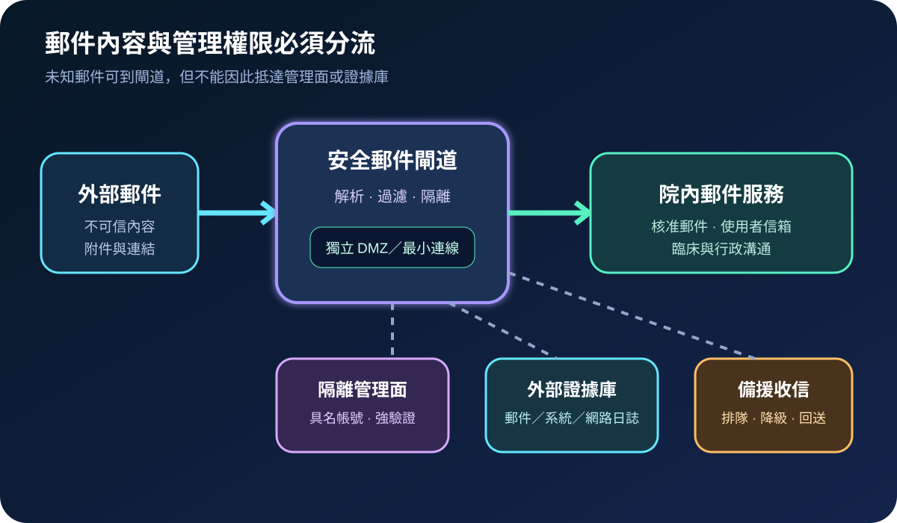
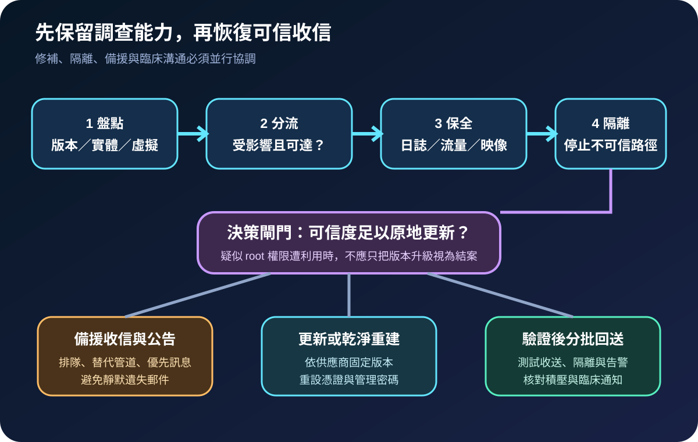
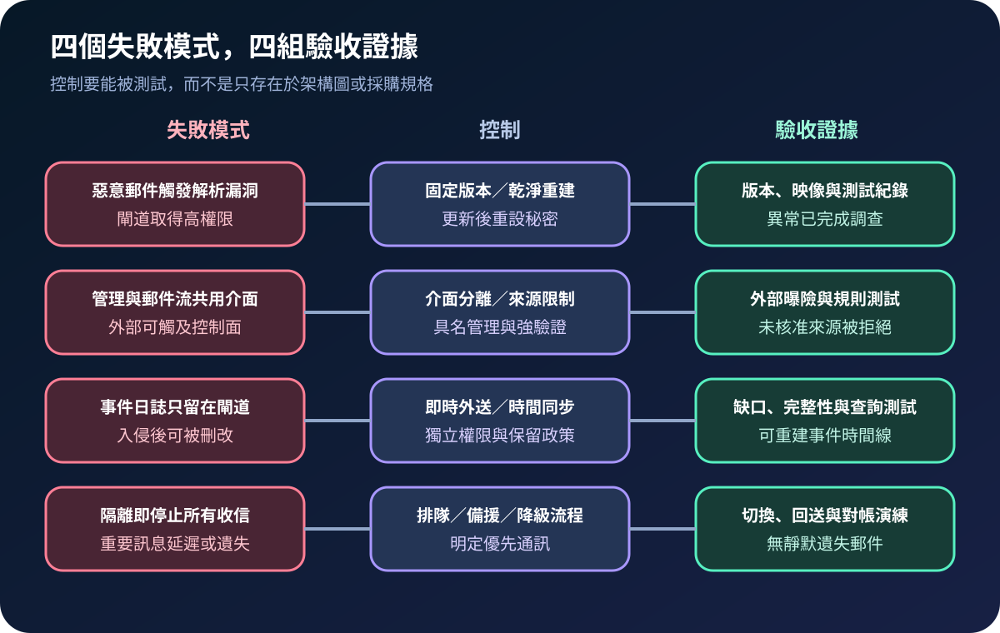

醫療資安國際觀察 · 2026-09-15
醫療郵件閘道遭利用時如何兼顧阻斷與收信：從惡意郵件到可信重建
作者：Dr. William｜醫療資訊與資安治理實務工作者
安全郵件閘道每天接收不可信內容，也掌握郵件流向與隔離能力。一旦閘道本身疑似遭利用，處置目標須同時涵蓋阻斷入侵、保留證據、維持重要通訊與可信恢復。
名詞解釋：閘道既是過濾器，也是高影響邊界
SEG（Secure Email Gateway）位於外部郵件與院內信箱之間，執行解析、過濾、隔離與投遞；SQL injection是未妥善驗證輸入而讓惡意內容改變資料庫查詢；root 權限代表作業系統最高權限。若攻擊者可藉郵件內容取得高權限，風險不只是一封釣魚信，而是閘道的組態、憑證、郵件紀錄與後續連線均可能失去可信度。
國際現況與適用邊界
Cisco 於 2026 年 9 月 14 日發布 CVE-2026-76461 公告：Cisco AsyncOS for Secure Email Gateway 的郵件解析邏輯驗證不足，未經驗證的遠端攻擊者可傳送特製郵件，進而以 root 權限執行命令；公告涵蓋實體與虛擬設備，並指出沒有可直接處理該漏洞的替代措施，需升級至公告列出的固定版本。CISA 同日將漏洞納入 KEV，表示已有遭利用證據，並要求進行鑑識分流。
法域與產品邊界：CISA 的 2026 年 9 月 17 日期限及 BOD 26-04 義務適用美國聯邦文職行政機關，不是台灣醫院的法定期限。該通報也不能推論其他品牌或所有郵件服務均受相同漏洞影響。台灣機構應依實際產品、版本、雲端或自管模式、曝險及通訊影響決定處置。
規劃：把安全與通訊持續性放在同一張表
範圍應涵蓋實體與虛擬閘道、叢集節點、管理介面、憑證、郵件路由、隔離區、外部日誌及雲端服務。郵件服務擁有人確認版本與通訊需求；資安單位保存證據並判定入侵範圍；網路單位限制管理流量；臨床與行政單位定義必須優先送達的通訊；供應商提供固定版本與重建程序。驗收可追蹤清冊完整率、外送日誌覆蓋率、備援切換時間、積壓郵件對帳差異及異常調查關閉率。

實作：隔離、備援與調查並行
- 盤點與比對：確認所有節點、版本、部署模式、外部郵件路徑、管理入口與日誌目的地，避免漏掉待機節點或舊虛擬機。
- 保全證據：依 Cisco 公告檢查每個叢集節點的郵件日誌及可疑 SQL 陳述，並保存系統、網路、認證及異常上下載紀錄。日誌應先外送，避免只留在疑似受控設備。
- 降低曝險：限制管理介面來源，分離郵件與管理網路，停用非必要服務；疑似遭利用的節點依事件程序隔離，不讓同一管理憑證繼續存取其他設備。
- 維持通訊：啟動郵件排隊、備援 MX 或核准的替代管道，公告可能延遲的服務及優先聯絡方式；恢復後核對積壓、重複與退信。
- 更新或重建：依供應商公告升級固定版本。若完整性無法確認，從可信映像重建，輪替管理密碼、API 金鑰與設備憑證，再驗證收送、隔離、告警及日誌外送。
風險：只修補可能留下不可信狀態
已取得 root 權限的事件可能改動系統、建立持久存取或竊取秘密，因此不能僅以版本號判定結案。另一方面，立即關閉唯一閘道可能使臨床轉介、檢驗協作或行政通知延遲。有效控制需將內容面與管理面分離、把日誌保存在不同權限域，並預先演練收信排隊、替代通訊及回送對帳。雲端代管環境則需由供應商提供更新狀態、事件範圍與可驗證證據。

可執行清單
- 能否列出所有閘道節點、版本、部署模式、管理入口、憑證與擁有人？
- 郵件與管理介面是否分離，且管理流量只允許核准來源與具名帳號？
- 郵件、系統、認證及網路日誌是否即時送往獨立權限域？
- 疑似遭利用時，是否先保存必要證據，再隔離、更新或乾淨重建？
- 停用主要閘道後，重要郵件是否可排隊或改走核准替代管道？
- 恢復後是否輪替秘密、測試收送與告警，並核對積壓、退信及重複郵件？
來源
- CISA｜Known Exploited Vulnerabilities Catalog：CVE-2026-76461（加入：2026-09-14；查閱：2026-09-15）
- Cisco｜Secure Email Gateway SQL Injection Vulnerability（發布：2026-09-14；查閱：2026-09-15）
- CISA｜BOD 26-04 Implementation Guidance（發布：2026-06-10；更新：2026-08-25；查閱：2026-09-15）
內容說明
本文依健康台灣深耕計畫相關治理內容整理，並參考 CISA 與 Cisco 公開資料，提出台灣醫療機構可採用的郵件閘道事件應變與營運持續方法；不取代主管機關公告、法律意見、供應商文件、事件鑑識或個案臨床風險判斷。